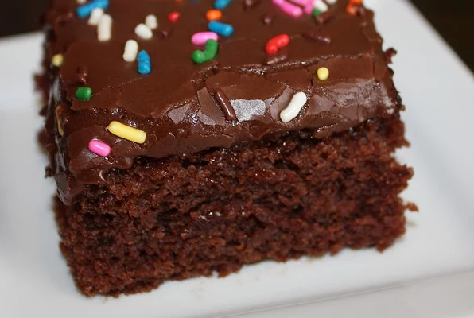

Wacky Cake

Description
Ingredients
- 1 1/2 cups all purpose flour
- 1 cup white sugar
- 4 tablespoons unsweetend cocoa powder
- 1 teaspoon baking soda
- 1/2 teaspoon salt
- 1 teaspoon vanilla extract
- 1 tablespoon vanilla extract
- 6 tablespoons vegetable oil
- 1 cup water
Steps
- Preheat oven to 350 degrees F (175 degrees C).
- Sift flour, sugar, salt, soda, and cocoa together into an 8x8 inch ungreased cake pan. Make three depressions. Pour oil into one well, vinegar into second, and vanilla into third well. Pour water over all, and stir well with fork.
- Bake at 350 degrees F (175 degrees C) for 30 to 40 minutes, or until tooth pick inserted comes out clean. Frost with your favorite icing.